"an empirical relationship was obtained which correlated ice accretion thickness and ice angles with theoretical impingement parameters." 1
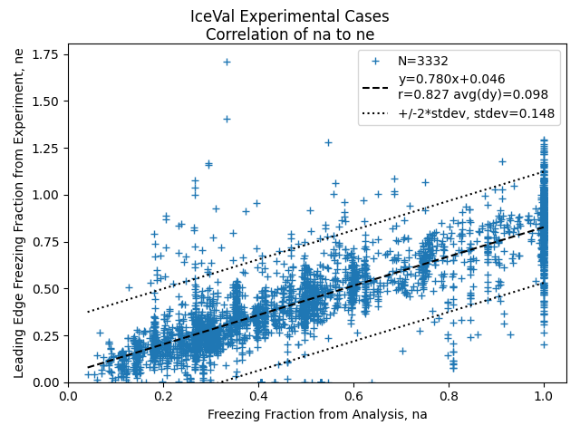
Introduction
Studies have correlated icing conditions to ice shapes and their effects. Here, we will test some of them using the 3665 experimental ice shapes in the IceVal database 1.
The studies had well-planned series of test conditions. So, when we use all 3332 IceVal experimental shapes from tests woth diverse objectives, things can get messy.
However, we will see that the final results are surprisingly good.
NASA/CR-2005-213852 3
NASA/CR-2005-213852 "Evaluation and Validation of the Messinger Freezing Fraction" has been reviewed previously in Conclusions of the Ice Shapes and Their Effects thread.
It looked at correlating ice shape parameters to calculated leading edge freezing fraction.
The test cases within it are now a subset of the IceVal database.
40 condition were tested to verify an implementation of Messinger 4 freezing fraction calculations for the leading edge of an airfoil.
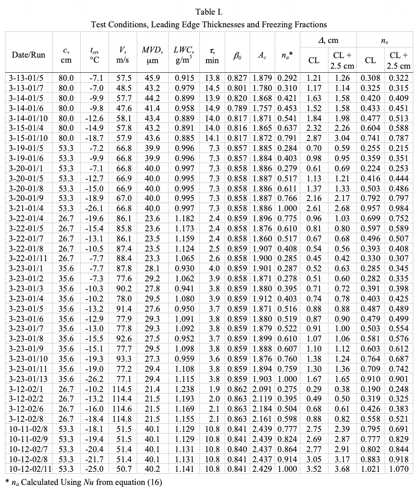
A key assumption is that the leading edge water collection efficiency can be accurately estimated from the Langmuir-Blodgett correlation (See reference 3 or Langmuir for more details).
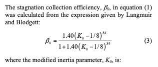
For an airfoil, the leading diameter of curvature is used when calculating Ko, not the leading edge radius as for a cylinder.
The values correlate quite well to values calculated by LEWICE,
with 3332 cases considered, including cases for several airfoils at several AOA values,
and several large drop icing cases.
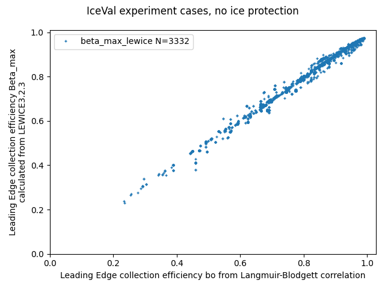
The analytic leading edge freezing fraction can then be calculated. (See reference 3 or Manual of Scaling Methods for more details).
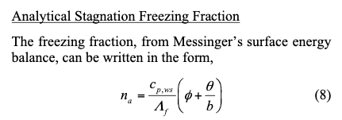
An experimental freezing fraction "ne" can be calculated from equation (1).
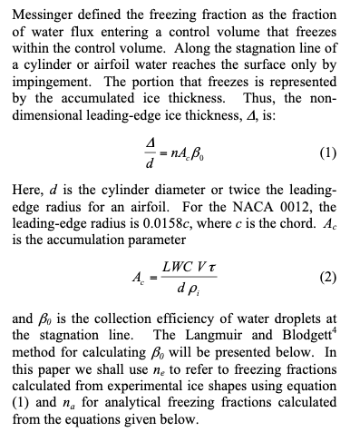
For a series of cases where the accumulation parameter (total water exposure) dimensionless parameter Ac was held constant, the ice shapes change with as temperature was varied, with a resulting change in freezing fraction.
The na and ne values were found to correlate well.
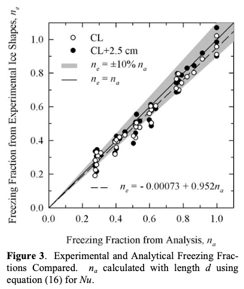
Comparisons with IceVal data
If we look at 672 cases in IceVal for the NACA0012 airfoil at A0A=0, the correlation for na is not as close as for the 40 cases in NASA/CR-2005-231852 Figure 3.

From the figure above, several cases "stack" vertically at selected values of na. Many of the test sequences were planned to make this happen.
For all cases in the IceVal database, the correlation is comparable.
Upper surface ice horn thickness
As the effects of ice have been correlated to upper surface ice horn height hu, it is desirable to be able to predict the value of hu.
The calculation of ne in equations (1) and (2) are for the airfoil leading edge.
We can extend this to define a "nx" value for the upper horn height hu:
hu / d = nx Ac Beta_o
For the 3332 IceVal cases, the correlation is surprisingly (to me) flat.
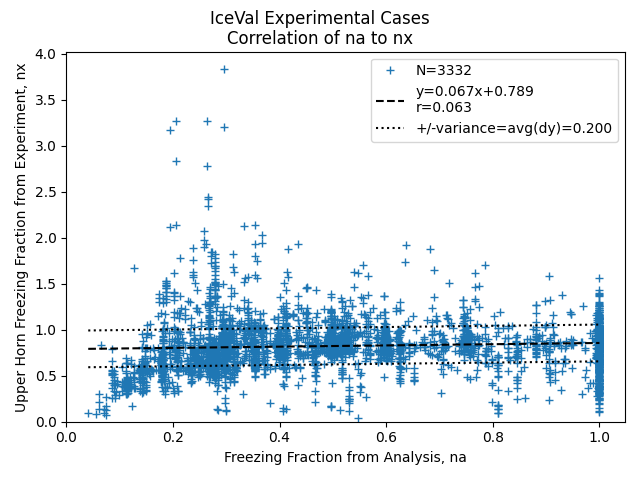
There are numerous outliers. It is perhaps doubtful that this could be a useful correlation.
However, we can back-calculate a predicted hu value for each case from the correlation and the definition of nx. we can then calculate a non-dimensional height ratio relative heigh difference as in the LEWICE validation report 5.
Where the ice shape does have a glaze ice horn, the max. thickness does give the horn thickness. In order to compare different conditions with different chord lengths and accretion conditions, the individual ice thicknesses were non-dimensionalized by the maximum accumulation thickness as given in Equation 3.

maximum accumulation thickness = t_max = LWC Airspeed Time / ice_density (with unit conversions)
relative height difference = (thick_experiment - thick_lewice) / t_max
When this values is compared to experiment, the variance (average difference) is 0.15:
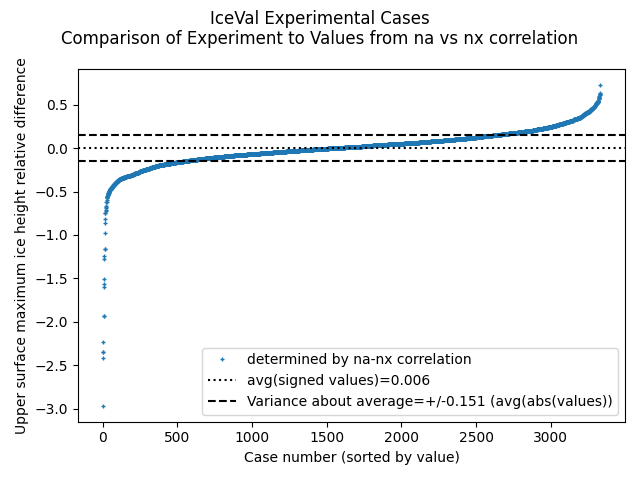
This is surprisingly [to me] quite comparable to the comparison between LEWICE values and experiment of 0.159:

Upper surface horn angle
Also surprisingly, a similar comparison for upper horn angle is comparable between the LEWICE results and using a na to theta_u correlation:
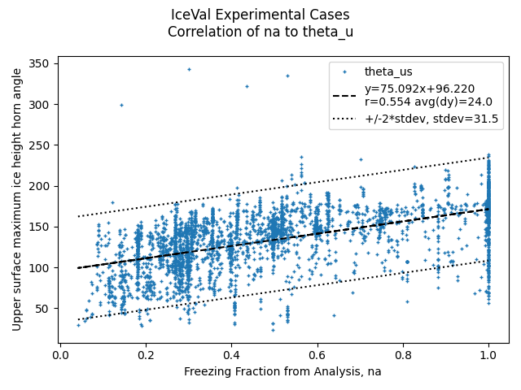
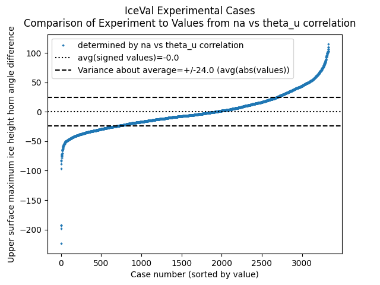
The correlations resulted in a +/-24 degree average horn angle difference, while LEWICE had a +/-25 degree difference.

Notes about LEWICE and THICK
LEWICE can calculate an initial leading edge freezing fraction. However, you will find that the LEWICE value do not always correspond well to values calculated using equation (10). The reasons for this are many and complex, and would require a unique post (if not several) to detail.
The 'IceThicknessLEMin' values output by the LEWICE THICK utility were found to not be always reliable. This is also true for the values in the IceVal ThickUtility Data table. The leading edge ice thickness is required to determine ne with equations (1) and (2). The Geometric Analysis method was used to determine the values herein.
Conclusions
The Messinger freezing fraction correlation is re-validated herein over 3332 experimental cases, in more detail than in 3.
The use of the correlations is much simpler than using LEWICE or other Computational Fluid Dynamics model to determine horn height and location, and the correlation is as accurate!
One "only" had to run 3332 experimental cases on several airfoils at a wide variety of conditions
to obtain the correlations.
I view this as largely fulfilling Wilder's vision of [editing out the "and sweep" part]:
Use of these relationships allows the direct determination of ice shapes adjusted for any given icing and flight condition as well as for size ... of the airfoil
Notes
-
Wilder, Ramon W.: "Techniques used to determine Artificial Ice Shapes and Ice Shedding, Characteristics of Unprotected Airfoil Surfaces" in Anon., "Aircraft Ice Protection", the report of a symposium held April 28-30, 1969, by the FAA Flight Standards Service; Federal Aviation Administration, 800 Independence Ave., S.W., Washington, DC 20590. apps.dtic.mil. ↩↩
-
IceVal DatAssistant (LEW-18343-1) Overview This NASA-developed technology provides an improved mechanism for managing the large volume of data generated and utilized in performing icing research.
[Note: the software is available only to US persons.]
software.nasa.gov ↩ -
Anderson, David N., and Jen-Ching Tsao. "Evaluation and Validation of the Messinger Freezing Fraction." 41st Aerospace Sciences Meeting and Exhibit. No. NASA/CR-2005-213852. 2005. ntrs ↩↩↩↩
-
Messinger, B. L.: Equilibrium Temperature of an Unheated Icing Surface as a Function of Airspeed. Preprint No. 342, Presented at I.A.S. Meeting, June 27-28, 1951. ↩
-
Wright, William, Mark Potapczuk, and Laurie Levinson. "Comparison of LEWICE and GlennICE in the SLD Regime." 46th AIAA aerospace sciences meeting and exhibit. 2008.
NASA/CR-2008-215174 ↩